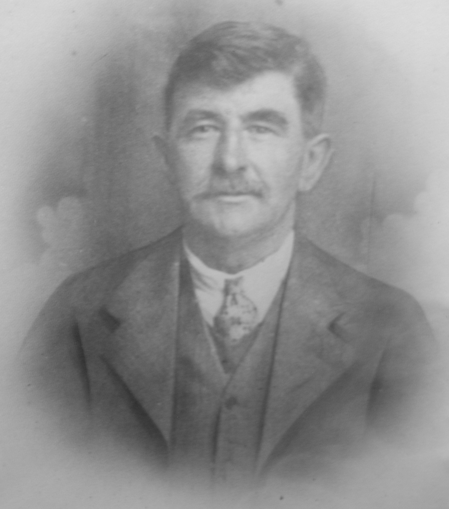
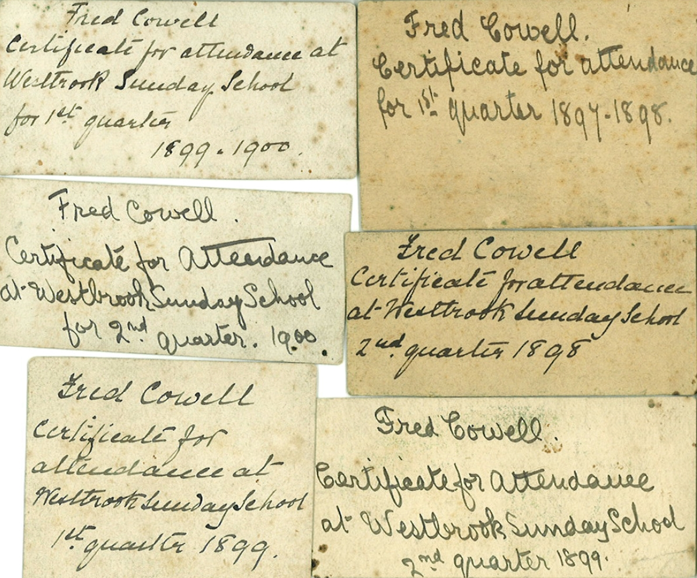
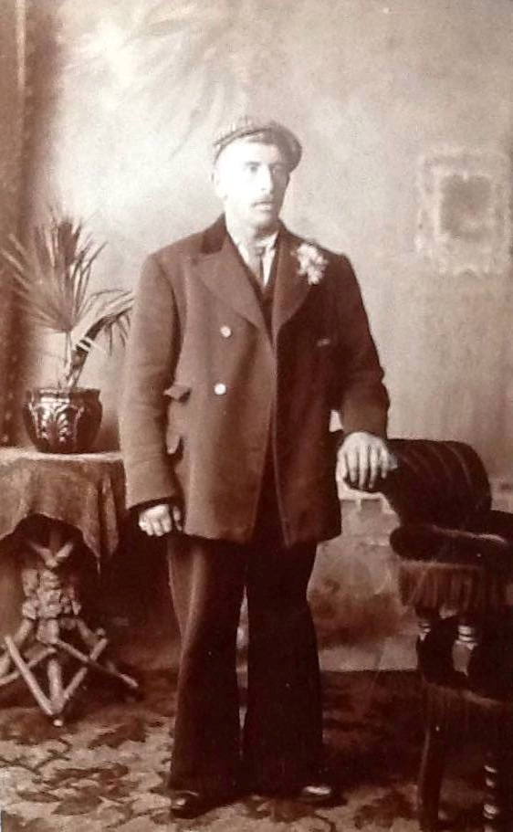
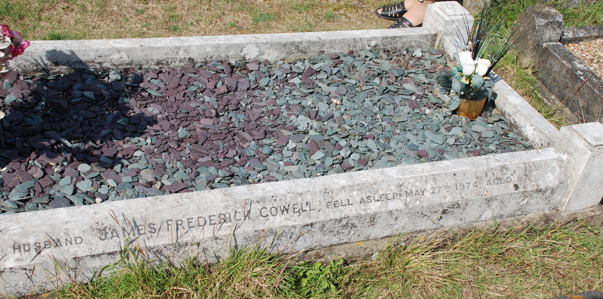
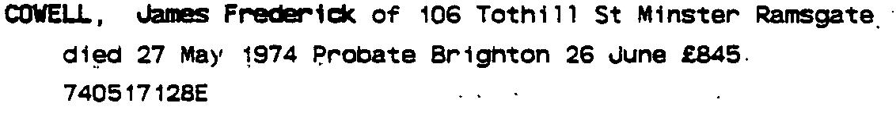
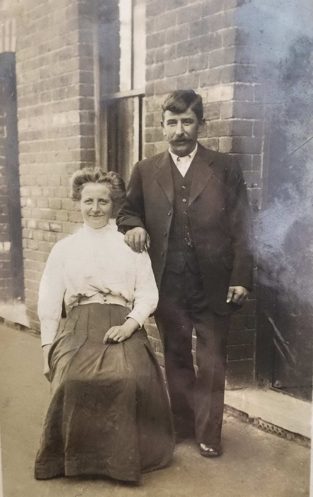
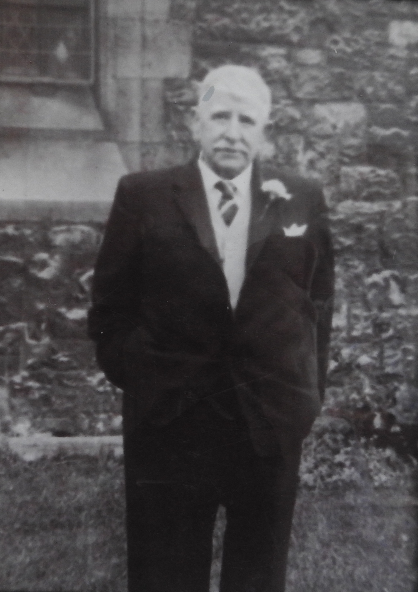
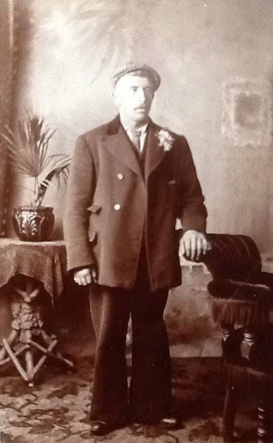
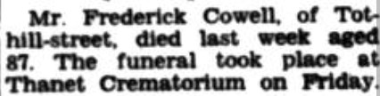

James Frederick Cowell 1887 - 1974
[ Home ] | [ Calendar ] | [ Surnames Index ] | [ Errors ] | [ Family History ]A seaman collier with the whitstable shipping company and the child of John Cowell (a farm waggoner) and Emma Culmer, James Cowell, (also known as Freddie Cowell) the grandfather of Nigel Horne, was born in Upstreet, Kent, England on 2 Mar 18871,2,3,4,5,6,7,8, was baptised in Chislet, Kent, England on 22 May 1887 went to Westbrook Sunday School, Westbrook, Thanet, Kent, England He married Emily Lawrence (with whom he had 9 children: Frederick James, Charles John, Emily Edith, Henry Richard Stephen, Reginald Albert, James Sidney, Dorothy Helen, Freda Violet and Joyce Margaret) at Thanet Registry Office in Thanet on 7 Jan 19099 (Married at Thanet Registry Office).
During his life, he was living at his birthplace on 5 Apr 18911; at 13 Ashburnham Road, St Lawrence in Thanet on 2 Apr 191111; at 7 Pouces Cottages, Manston, Kent on 19 Jun 192112, in 1935, in 1936 and on 29 Sept 19393 (when he was living with his); and at 37 Tothill Street, Minster in Thanet in 195310. On 19 Jun 1921 he was working at Mr Burgess Works Dept Air Ministry at Manston Aerodrome, Minster, Thanet, Kent, England.
He died on 27 May 1974 at 106 Tothill Street, Minster in Thanet5,8 and was buried at Minster Cemetery, Tothill Street, Minster on 31 May 1974 (a drizzly day) following his funeral on Thanet Crematorium, Manston Road, Margate, Kent, England8.
Parents
- John was born on 17 May 1858
- Emma was born on 15 Nov 1860
Children
- Frederick James was born on 16 Apr 1909
- Charles John was born on 4 Jan 1911
- Emily Edith was born on 16 May 1912
- Henry Richard Stephen was born on 28 Sept 1913
- Reginald Albert was born c. May 1915
- James Sidney was born on 30 Jul 1916
- Dorothy Helen was born on 14 Nov 1917
- Freda Violet was born on 21 Dec 1918
- Joyce Margaret was born on 12 Feb 1931
Citations
- 1891 England Census Online publication - Provo, UT, USA: The Generations Network, Inc., 2005.Original data - Census Returns of England and Wales, 1891. Kew, Surrey, England: The National Archives of the UK (TNA): Public Record Office (PRO), 1891. Data imaged from The National
- 1911 England Census Online publication - Provo, UT, USA: Ancestry.com Operations, Inc., 2011.Original data - Census Returns of England and Wales, 1911. Kew, Surrey, England: The National Archives of the UK (TNA), 1911. Data imaged from the National Archives, London, England.
- 1939 Register - Findmypast (was the head of the household)
- England & Wales deaths 1837-2007 - Findmypast
- England & Wales, Death Index: 1984-2005 Online publication - Provo, UT, USA: The Generations Network, Inc., 2007.Original data - General Register Office. England and Wales Civil Registration Indexes. London, England: General Register Office. © Crown copyright. Published by permission of the Cont
- England & Wales, FreeBMD Birth Index, 1837-1915 Online publication - Provo, UT, USA: The Generations Network, Inc., 2006.Original data - General Register Office. England and Wales Civil Registration Indexes. London, England: General Register Office. © Crown copyright. Published by permission of the Cont
- England, Select Births and Christenings, 1538-1975 Ancestry.com Operations, Inc.
- UK and Ireland, Find A Grave Index, 1300s-Current Ancestry.com Operations, Inc.
- England & Wales, FreeBMD Marriage Index: 1837-1915 Online publication - Provo, UT, USA: The Generations Network, Inc., 2006.Original data - General Register Office. England and Wales Civil Registration Indexes. London, England: General Register Office. © Crown copyright. Published by permission of the Cont
- From the inquest into the death of his son, Frederick James Cowell
- 1911 Census for England & Wales - Findmypast
- 1921 Census Of England & Wales - Findmypast (was age 34 and the head of the household)
Media
Mum and Dad Marriage

James Frederick Cowell

James Frederick Cowell - sunday school attendance

James Frederick Cowell 2

James Cowell - birth certificate

James Cowell - Emily Lawrence - marriage certificate

James Cowell - grave

James Cowell - on board the Venus

James Frederick Cowell - probate

James Cowell - Emily Lawrence

James Frederick Cowell - 3

James Frederick Cowell - 4

1936 Kelly's Directory - Isle of Thanet

James Frederick Cowell
1935 Kelly's Thanet Directory

James Frederick Cowell - 5

East Kent Times and Mail - 5 Jun 1974

1911 England, Wales & Scotland Census Transcription - GBC-1911-RG14-04528-0357-1
England & Wales deaths 1837-2007 - BMD/D/1974/2/AZ/000224/002
Canterbury Baptisms Image - GBPRS-CANT-005264846-00677
England, Births & Baptisms 1538-1975 Transcription - R_884920329
England & Wales births 1837-2006 Transcription - BMD-B-1887-2-AZ-000129-262
1939 Register Transcription - TNA-R39-1820-1820G-008-30
England & Wales marriages 1837-2008 - BMD/M/1909/1/AZ/000056/051
England Births & Baptisms 1538-1975 - R_884112372
1939 Register Transcription - TNA-R39-1820-1820G-008-31
Family Tree

Map
Generated by ged2site. Last updated on Jul 3, 2024
Known Issues
Residence record for 1936 contains no citation
Residence record for 1935 contains no citation
May have been living with father on 5 Apr 1891, but the addresses don't match or aren't detailed enough to be sure
Jun 19, 1921: not living at same address as spouse Emily Lawrence ('7 Pouces Cottages, Manston, Kent, England'/'7 Pouces Cottages, Minster, Thanet, Kent, England')
Listed in the residence for 1935, but spouse Emily Lawrence is not
Listed in the residence for 1936, but spouse Emily Lawrence is not
Census information missing between 1891 England Census and Census UK 1911